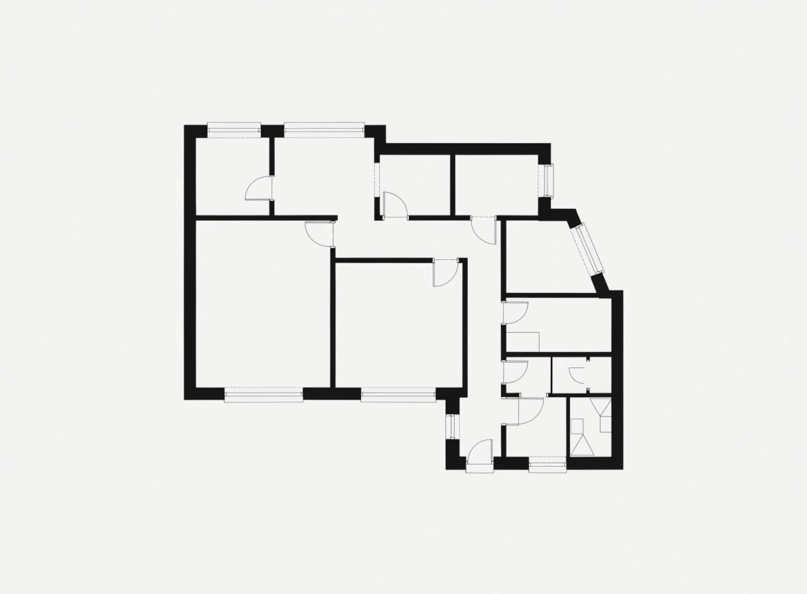
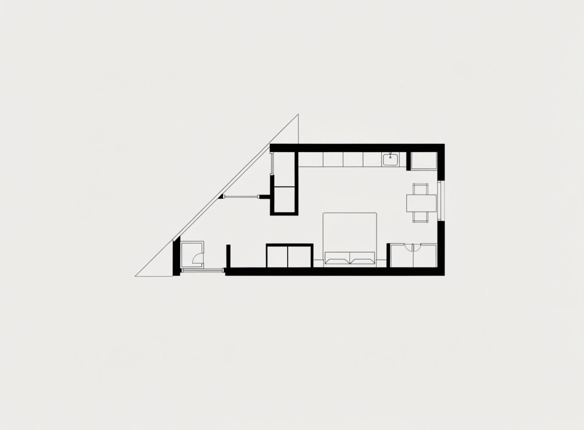
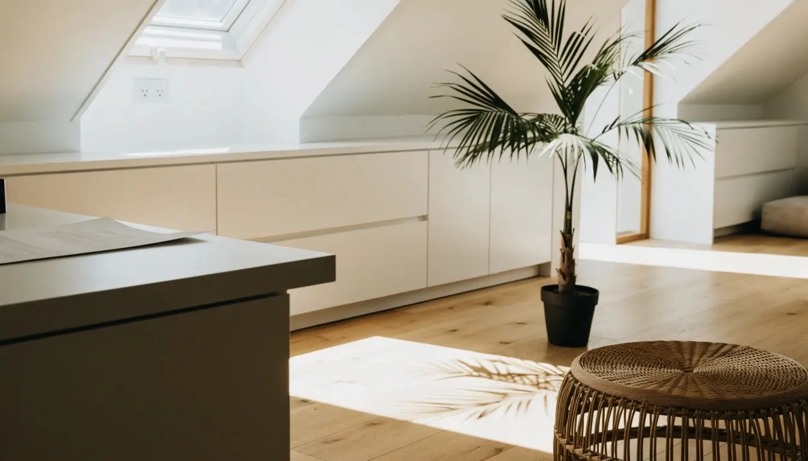
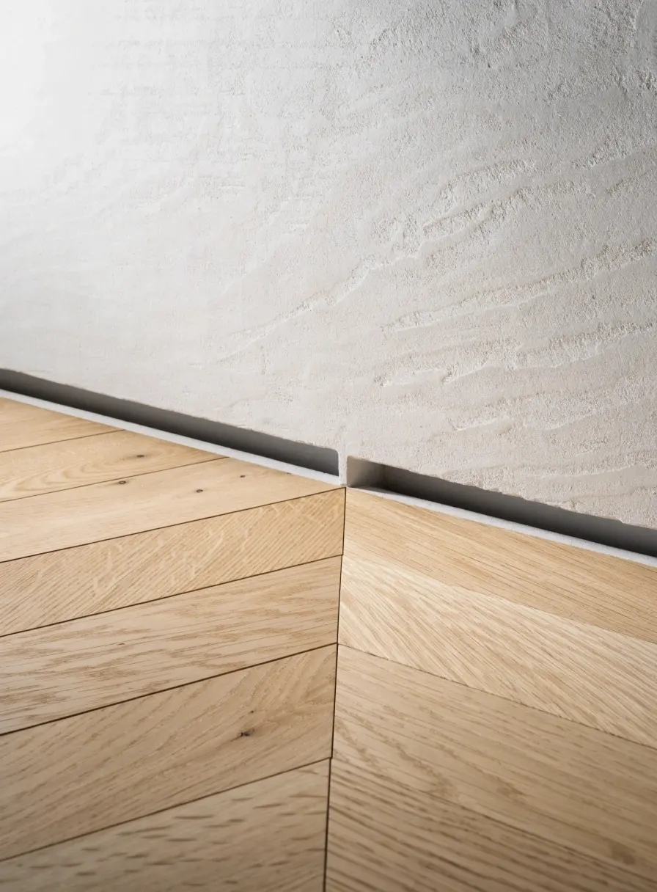
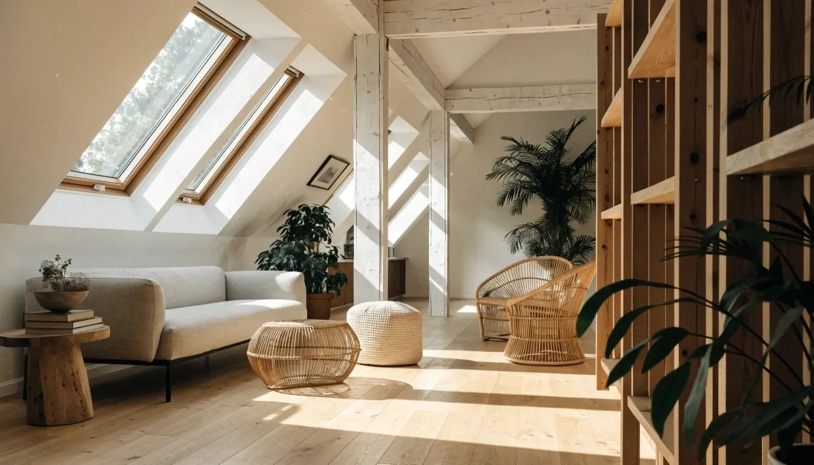
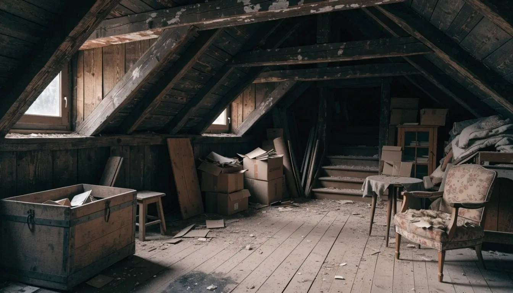
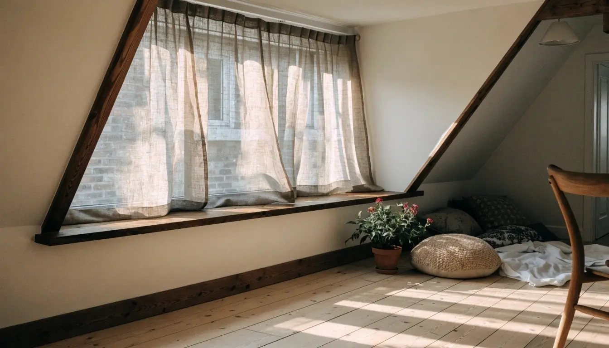
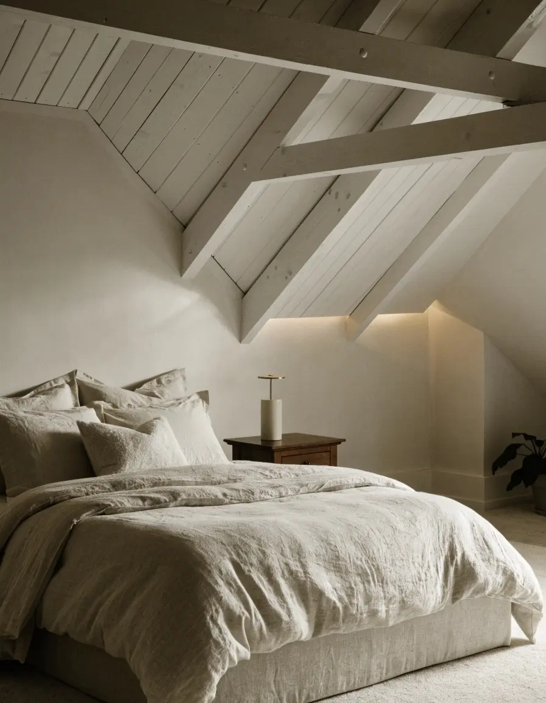

3.5-room attic
Scandinavian style – Kreis 4 2025

Reimagining the attic: a balance of light and geometry
We completely transformed the perception of this complex top-floor layout, turning it into an airy, highly functional sanctuary. The core design revolves around concealed storage systems, clean geometric lines, and honest, tactile materials. By carefully preserving the historic character of the attic beams, we seamlessly integrated advanced engineering with refined Scandinavian minimalism.
Blueprint & Layout (Floor plans)


Gallery

Monolithic Kitchen Concept
Handleless matte white cabinets integrated seamlessly into the structural wall. Calacatta marble surfaces with a custom-engineered drop-in sink layout.
Shadow Gap & Flooring Junction
Meticulous execution of a 10mm recessed flush baseboard. Zero-tolerance alignment between Swiss oak chevron parquet and raw plaster finish.



Natural Light Architecture
Restoration of historic French windows to optimize daylight. Soft texturing achieved through pure neutral linen drapery and oiled oak floor reflections.


Master Bedroom Spatial Flow
A secluded sleeping zone prioritizing acoustic comfort and hidden storage. Features smart climate integration concealed behind minimalist ceiling shadow lines.